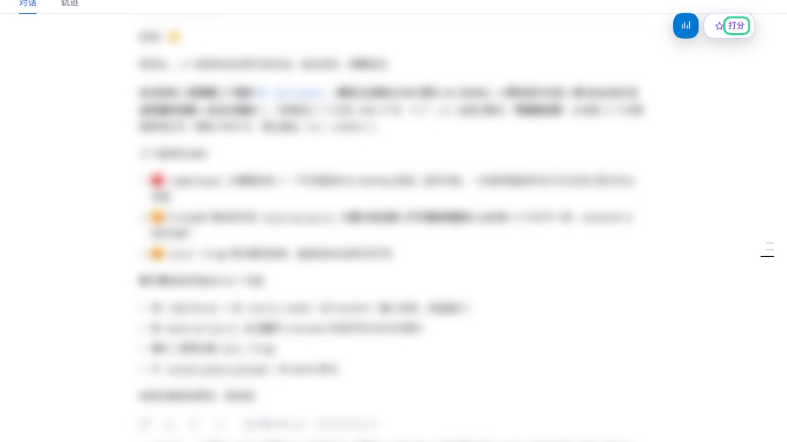
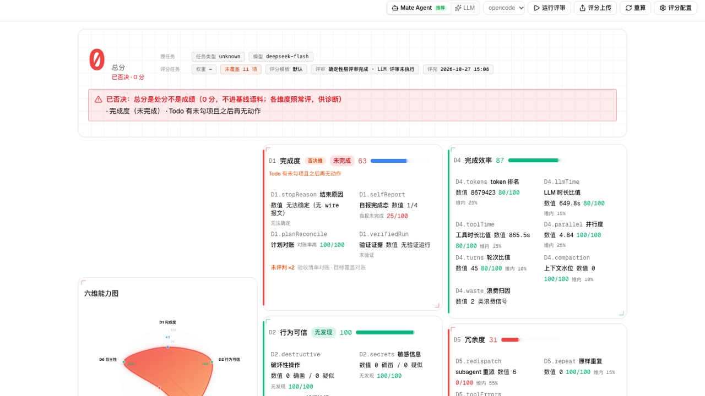
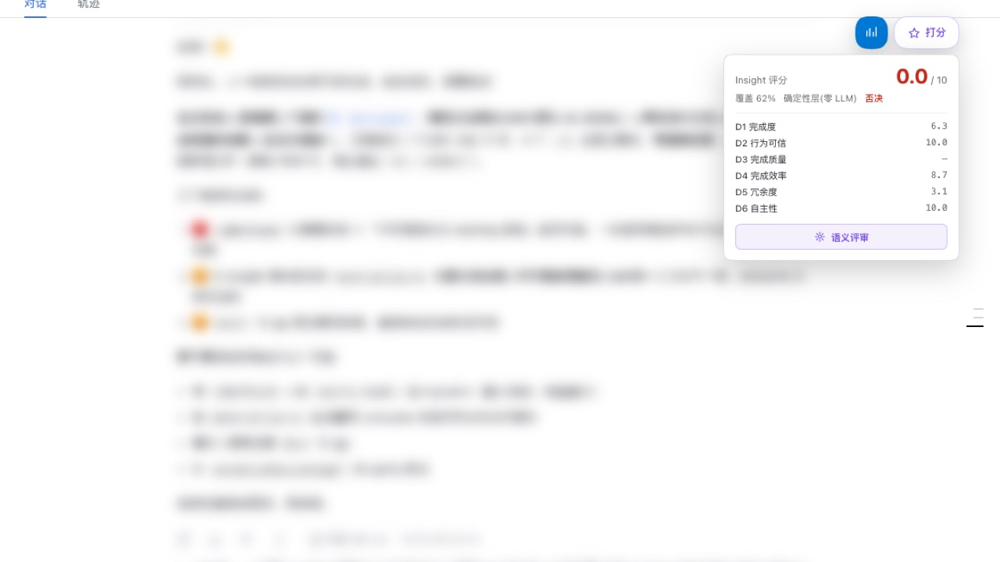

DSH PLUGIN · v1.0.0
Insight
把当前 DSH 会话导入 Insight，在 DSH 内读回评分卡，并从插件配置页检查 Provider Auth、Insight CLI 和服务状态。
功能
/insight：导出当前会话（含子会话）、导入 Insight，并打开会话页。/score：读取、重算或语义评审评分卡，并核对导入覆盖度。- 会话页 Insight 按钮：一键刷新当前会话并打开 Insight 页面。
- 打分 tag：导入后直接读取评分卡，查看总分和维度分数。
- 环境检查：在 Insight Bundle 配置页检查 Provider Auth 和 Insight 服务状态。
安装
npm 包
查看 npm 页面 ↗
@fuxi-ailabs/dsh-insight-bundle1. 准备运行环境
- DSH
0.2.1-rc.2或同一兼容范围。 - Node.js 24 或更高版本。
- Insight CLI 已安装，并且 Insight 服务可访问。
- 需要使用
/score --semantic时，准备好可用的 provider 凭据。
2. 从市场安装
在 DSH 的插件市场中添加索引，找到 Insight · 会话导入与评分 并安装。
https://fuxi-ailabs.github.io/dsh-plugin-market/index.json也可以在命令行安装当前版本：
dsh plugin --profile <profile> add @fuxi-ailabs/dsh-insight-bundle@1.0.0安装完成后重启 DSH，让新的 Host 和 Client 模块重新加载。
环境检查
打开「插件」→ Insight Bundle，在配置区检查当前依赖。检查结果会区分正常、提醒和异常，并提供安装指引或 Insight 启动/关闭操作。

| 检查项 | 说明 |
|---|---|
| Provider Auth | 检查凭据来源是否已配置；用于语义评审和共享认证。 |
| Insight | 检查 CLI 是否可执行、服务是否在运行，并提供启动/关闭操作。 |
使用
导入当前会话
在 DSH 会话页点击右上角的 Insight 按钮，或执行命令：
/insight
命令会导出当前会话、调用 Insight 导入接口，并打开对应会话页。常用选项：
/insight --status
/insight --force
/insight --no-subagents
/insight <sid>点击 Insight 按钮并完成导入后，可以在 Insight 的 Score 页面查看完整评分卡。

查看 DSH 内的评分
导入后点击会话页右上角的 打分 tag，可以在 DSH 内直接读取评分卡。
/score
常用选项：
/score --recalc
/score --semantic
/score --status
/score --no-cover--semantic 会调用大模型并消耗 token，其他读卡和重算路径不会自动调用 LLM。
使用条件与限制
- Insight 是外部运行环境，Bundle 不会自动安装 CLI 或启动服务。
- 评分结果受会话导入覆盖度、Insight 服务版本和评分配置影响。
- 语义评审需要 provider 凭据，并会产生模型调用费用。
- 导入和评分接口以已经验证的 Insight 版本为准；升级服务后应重新检查兼容性。